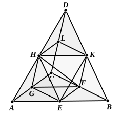
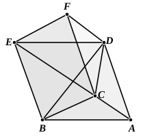
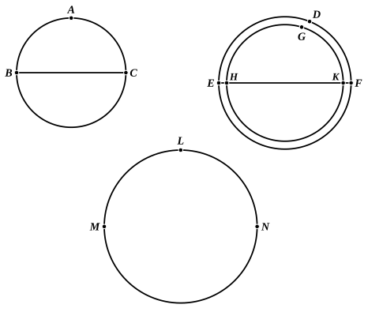

BOOK XII. PROPOSITIONS.¶

Any pyramid which has a triangular base is divided into two pyramids equal and similar to one another, similar to the whole and having triangular bases, and into two equal prisms; and the two prisms are greater than the half of the whole pyramid.
If there be two pyramids of the same height which have triangular bases, and each of them be divided into two pyramids equal to one another and similar to the whole, and into two equal prisms, then, as the base of the one pyramid is to the base of the other pyramid, so will all the prisms in the one pyramid be to all the prisms, being equal in multitude, in the other pyramid.

Any prism which has a triangular base is divided into three pyramids equal to one another which have triangular bases.

Spheres are to one another in the triplicate ratio of their respective diameters.